Bayesian inference with interacting particle systems
Description
Rbiips is an interface with the Biips C++ libraries for analysing Bayesian graphical models using advanced particle methods.
Details
Biips is a general software for Bayesian inference with interacting particle systems, a.k.a. sequential Monte Carlo (SMC) methods. It aims at popularizing the use of these methods to non-statistician researchers and students, thanks to its automated “black box” inference engine. It borrows from the BUGS/JAGS software, widely used in Bayesian statistics, the statistical modeling with graphical models and the language associated with their descriptions.
See the Biips website for more information.
The typical workflow is the following:
- Define the model in BUGS language (see the JAGS User Manual for help) and the data.
- Add custom functions or distributions with
biips_add_functionandbiips_add_distribution. - Compile the model with
biips_model - Run inference algorithms:
- Analyse sensitivity to parameters with
biips_smc_sensitivity. - Run SMC filtering and smoothing algorithms with
biips_smc_samples. - Run particle MCMC algorithms with
biips_pimh_samplesorbiips_pmmh_samples.
- Analyse sensitivity to parameters with
- Diagnose and analyze the output obtained as
smcarrayandmcmcarrayobjects withbiips_diagnosis,biips_summary,biips_density,biips_histandbiips_table
References
A. Todeschini, F. Caron, M. Fuentes, P. Legrand, P. Del Moral. Biips: A Software platform for Bayesian Inference with Interacting Particle Systems. Technical Report, 2014. (work in progress)
Examples
#' # Add custom functions and distributions to BUGS language #' Add custom function `f` f_dim <- function(x_dim, t_dim) { # Check dimensions of the input and return dimension of the output of function f stopifnot(prod(x_dim) == 1, prod(t_dim) == 1) x_dim } f_eval <- function(x, t) { # Evaluate function f 0.5 * x + 25 * x/(1 + x^2) + 8 * cos(1.2 * t) } biips_add_function('f', 2, f_dim, f_eval)* Added function f#' Add custom sampling distribution `dMN` dMN_dim <- function(mu_dim, Sig_dim) { # Check dimensions of the input and return dimension of the output of # distribution dMN stopifnot(prod(mu_dim) == mu_dim[1], length(Sig_dim) == 2, mu_dim[1] == Sig_dim) mu_dim } dMN_sample <- function(mu, Sig) { # Draw a sample of distribution dMN mu + t(chol(Sig)) %*% rnorm(length(mu)) } biips_add_distribution('dMN', 2, dMN_dim, dMN_sample)* Added distribution dMN#' # Compile model modelfile <- system.file('extdata', 'hmm_f.bug', package = 'Rbiips') stopifnot(nchar(modelfile) > 0) cat(readLines(modelfile), sep = '\n')var c_true[tmax], x_true[tmax], c[tmax], x[tmax], y[tmax] data { x_true[1] ~ dnorm(0, 1/5) y[1] ~ dnorm(x_true[1], exp(logtau_true)) for (t in 2:tmax) { c_true[t] ~ dcat(p) x_true[t] ~ dnorm(f(x_true[t-1], t-1), ifelse(c_true[t]==1, 1/10, 1/100)) y[t] ~ dnorm(x_true[t]/4, exp(logtau_true)) } } model { logtau ~ dunif(-3, 3) x[1] ~ dnorm(0, 1/5) y[1] ~ dnorm(x[1], exp(logtau)) for (t in 2:tmax) { c[t] ~ dcat(p) x[t] ~ dnorm(f(x[t-1], t-1), ifelse(c[t]==1, 1/10, 1/100)) y[t] ~ dnorm(x[t]/4, exp(logtau)) } }data <- list(tmax = 10, p = c(.5, .5), logtau_true = log(1), logtau = log(1)) model <- biips_model(modelfile, data, sample_data = TRUE)* Parsing model in: /home/adrien-alea/workspace/biips-git/Rbiips/inst/extdata/hmm_f.bug * Compiling data graph Declaring variables Resolving undeclared variables Allocating nodes Graph size: 94 Sampling data Reading data back into data table * Compiling model graph Declaring variables Resolving undeclared variables Allocating nodes Graph size: 105#' # SMC algorithm n_part <- 100 out_smc <- biips_smc_samples(model, c('x', 'c[2:10]'), n_part, type = 'fs', rs_thres = 0.5, rs_type = 'stratified')* Assigning node samplers * Running SMC forward sampler with 100 particles |--------------------------------------------------| 100% |**************************************************| 10 iterations in 0.06 sbiips_diagnosis(out_smc)* Diagnosis of variable: c[2:10] Filtering: GOOD Smoothing: POOR The minimum effective sample size is too low: 11.99595 Estimates may be poor for some variables. You should increase the number of particles .* Diagnosis of variable: x[1:10] Filtering: GOOD Smoothing: POOR The minimum effective sample size is too low: 11.99595 Estimates may be poor for some variables. You should increase the number of particles .biips_summary(out_smc)c[2:10] filtering smcarray: $mode [1] 2 1 1 1 1 2 1 2 1 Marginalizing over: particle(100) c[2:10] smoothing smcarray: $mode [1] 2 1 1 1 1 2 1 2 1 Marginalizing over: particle(100) x filtering smcarray: $mean [1] 1.3153720 0.4839511 -12.0688823 -13.6029322 -6.5871240 -0.4165007 7.8628700 2.9812993 -10.0703310 -6.4788492 Marginalizing over: particle(100) x smoothing smcarray: $mean [1] 0.5419981 -1.7648674 -12.3238752 -13.4926602 -7.1000808 0.3578509 7.9625736 1.9565314 -9.9737032 -6.4788492 Marginalizing over: particle(100)par(mfrow = c(2, 2)) plot(biips_density(out_smc$x, bw = 'nrd0', adjust = 1, n = 100))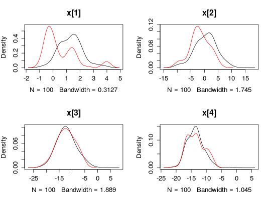
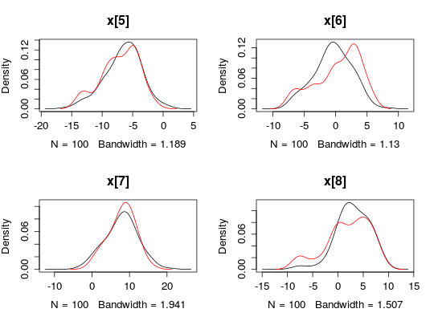
plot(biips_table(out_smc[['c[2:10]']]))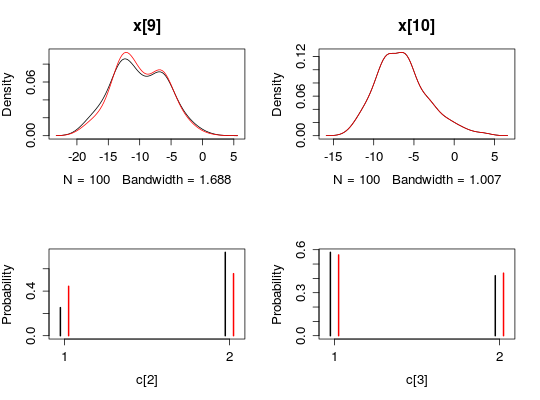
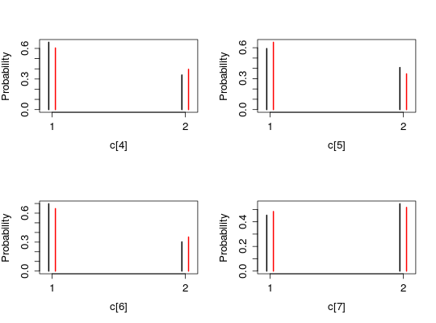
#' # PIMH algorithm n_part <- 50 obj_pimh <- biips_pimh_init(model, c('x', 'c[2:10]')) # Initialize* Initializing PIMHout_pimh_burn <- biips_pimh_update(obj_pimh, 100, n_part) # Burn-in* Updating PIMH with 50 particles |--------------------------------------------------| 100% |**************************************************| 100 iterations in 2.23 sout_pimh <- biips_pimh_samples(obj_pimh, 100, n_part) # Samples* Generating PIMH samples with 50 particles |--------------------------------------------------| 100% |**************************************************| 100 iterations in 2.08 sbiips_summary(out_pimh)x mcmcarray: $mean [1] 0.7973209 -2.5408423 -10.6871045 -12.3603393 -6.8025779 0.3168321 9.0079327 1.5995012 -11.0913127 -6.5358798 Marginalizing over: iteration(100) c[2:10] mcmcarray: $mode [1] 2 1 1 1 1 2 1 2 1 Marginalizing over: iteration(100)par(mfrow = c(2, 2))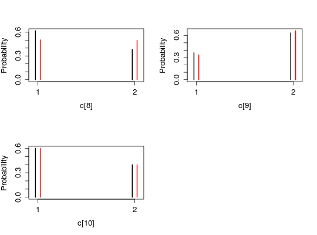
plot(biips_density(out_pimh$x))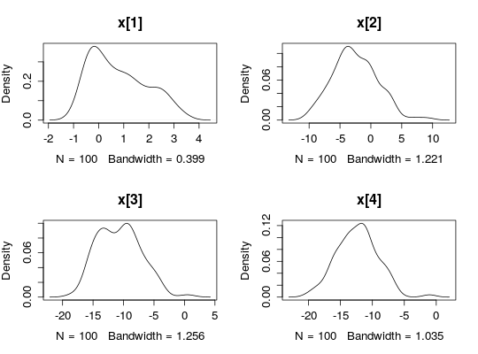
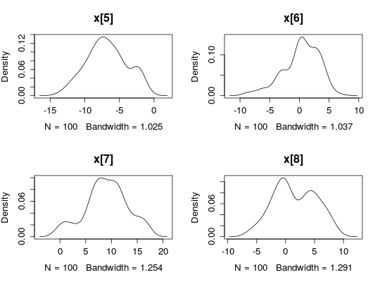
biips_hist(out_pimh$x)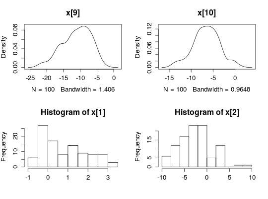
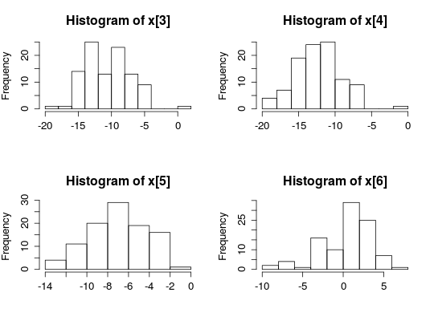
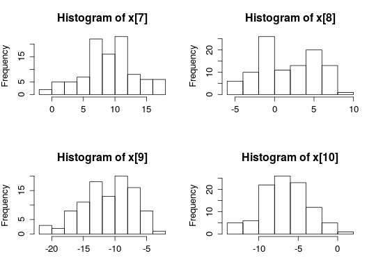
plot(biips_table(out_pimh[['c[2:10]']]))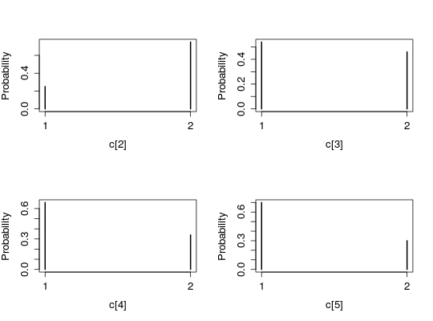
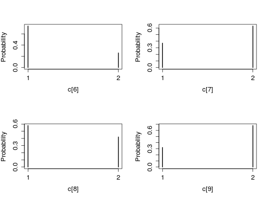
#' # SMC sensitivity analysis n_part <- 50 logtau_val <- -10:10 out_sens <- biips_smc_sensitivity(model, list(logtau = logtau_val), n_part)* Analyzing sensitivity with 50 particles |--------------------------------------------------| 100% |**************************************************| 21 iterations in 0.51 s#' # PMMH algorithm data <- list(tmax = 10, p = c(.5, .5), logtau_true = log(1)) model <- biips_model(modelfile, data)* Parsing model in: /home/adrien-alea/workspace/biips-git/Rbiips/inst/extdata/hmm_f.bug * Compiling data graph Declaring variables Resolving undeclared variables Allocating nodes Graph size: 93 Sampling data Reading data back into data table * Compiling model graph Declaring variables Resolving undeclared variables Allocating nodes Graph size: 105n_part <- 50 obj_pmmh <- biips_pmmh_init(model, 'logtau', latent_names = c('x', 'c[2:10]'), inits = list(logtau = -2)) # Initialize* Initializing PMMHout_pmmh_burn <- biips_pmmh_update(obj_pmmh, 100, n_part) # Burn-in* Adapting PMMH with 50 particles |--------------------------------------------------| 100% |++++++++++++++++++++++++++++++++++++++++++++++++++| 100 iterations in 2.18 sout_pmmh <- biips_pmmh_samples(obj_pmmh, 100, n_part, thin = 1) # Samples* Generating 100 PMMH samples with 50 particles |--------------------------------------------------| 100% |**************************************************| 100 iterations in 2.06 sbiips_summary(out_pmmh)logtau mcmcarray: $mean [1] 2.262285 Marginalizing over: iteration(100) x mcmcarray: $mean [1] 3.709807 -5.865597 -8.867467 -14.767861 -8.218592 3.751249 8.203594 4.226304 -1.061391 -11.163502 Marginalizing over: iteration(100) c[2:10] mcmcarray: $mode [1] 2 1 1 1 1 1 1 1 1 Marginalizing over: iteration(100)par(mfrow = c(2, 2))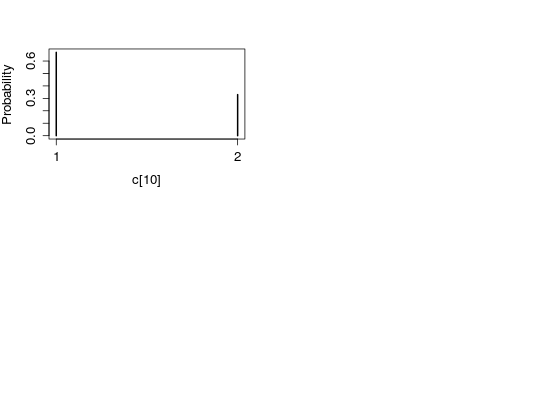
plot(biips_density(out_pmmh$logtau)) biips_hist(out_pmmh$logtau) plot(biips_density(out_pmmh$x))
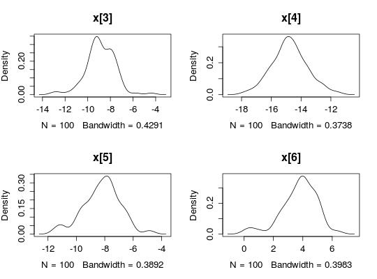
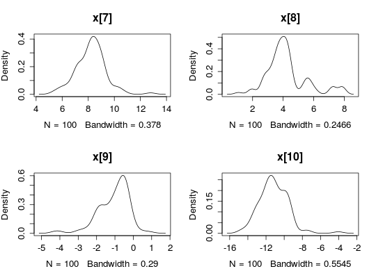
biips_hist(out_pmmh$x)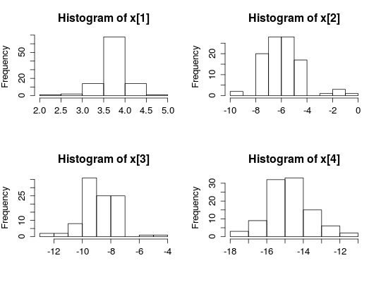
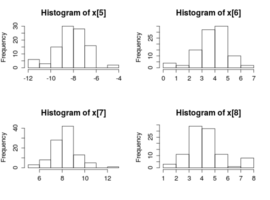
plot(biips_table(out_pmmh[['c[2:10]']]))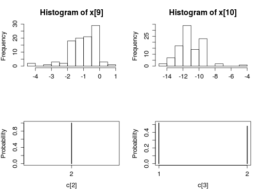
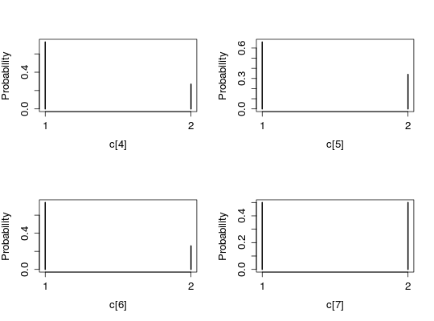
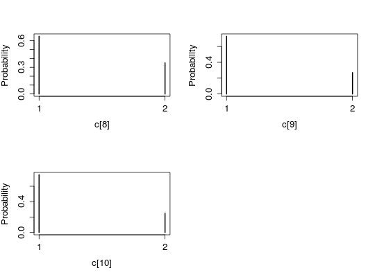

See also
biips_add_function, biips_add_distribution,
biips_model, biips_smc_sensitivity, biips_smc_samples,
biips_pimh_samples, biips_pmmh_samples, smcarray,
mcmcarray, biips_diagnosis, biips_summary,
biips_density, biips_hist, biips_table,
Biips website,
JAGS User Manual
Author
Rbiips development is supported by the team ALEA at Inria Bordeaux Sud-Ouest.- Adrien Todeschini
- Francois Caron
- Marc Fuentes